What the brain sounds like when it moves a hand
Source: sub-01_ses-3_behavior+ecephys.nwb | channel 71 (MNI (-58,1,17)) | MODE: music (parameter-mapping) | 5 bands -> C-major chord voices, high-gamma bursts -> plucked notes | 24s brain -> 10s audio
reach_activereach contrast
3 reach onsets in this window -- listen for the hum ducking with repeated crackles | 20 burst-notes
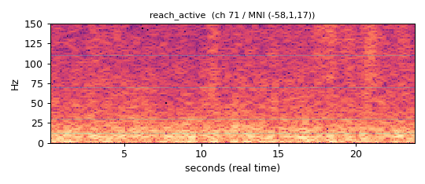
rest_quietreach contrast
no reaches -- steady resting hum (beta idle rhythm) | 0 burst-notes
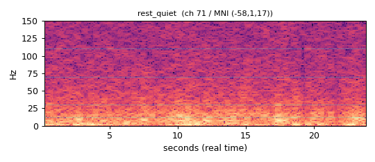
Talk, TVbehavior
coarse-behavior epoch: Talk, TV | 9 burst-notes
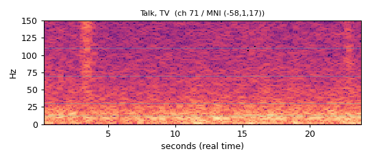
TVbehavior
coarse-behavior epoch: TV | 19 burst-notes
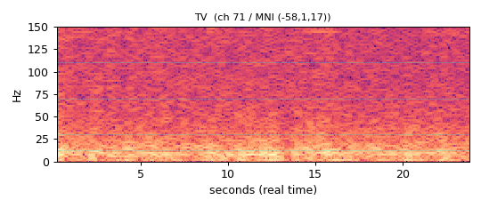
Inactivebehavior
coarse-behavior epoch: Inactive | 26 burst-notes
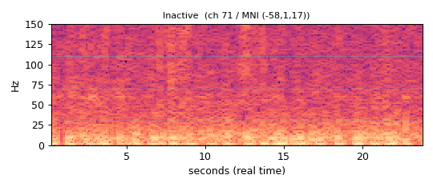
Eat, Talkbehavior
coarse-behavior epoch: Eat, Talk | 23 burst-notes
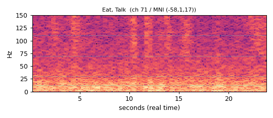
Other activitybehavior
coarse-behavior epoch: Other activity | 1 burst-notes
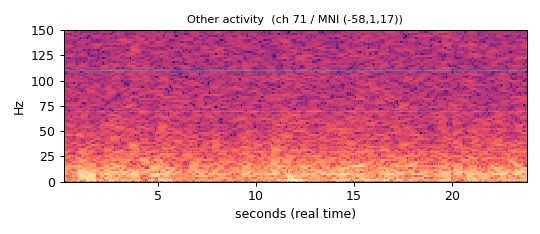
Computer/phonebehavior
coarse-behavior epoch: Computer/phone | 17 burst-notes
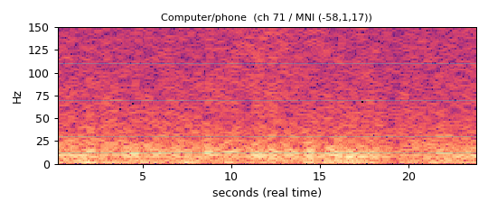
Eat, TVbehavior
coarse-behavior epoch: Eat, TV | 7 burst-notes
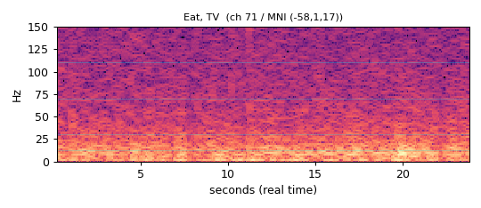
Sleep/restbehavior
coarse-behavior epoch: Sleep/rest | 1 burst-notes
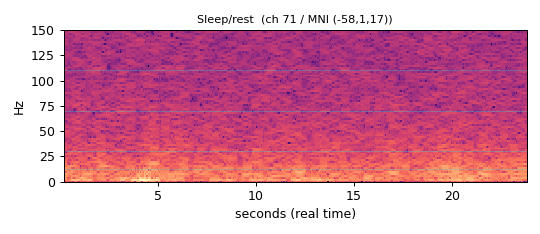
Talkbehavior
coarse-behavior epoch: Talk | 1 burst-notes
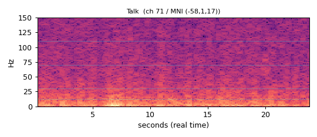